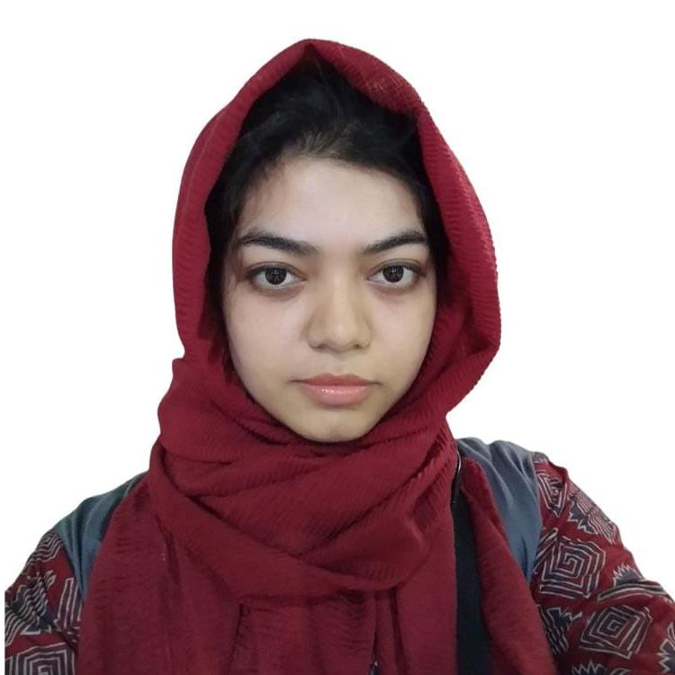
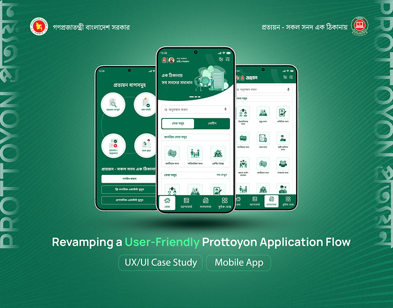
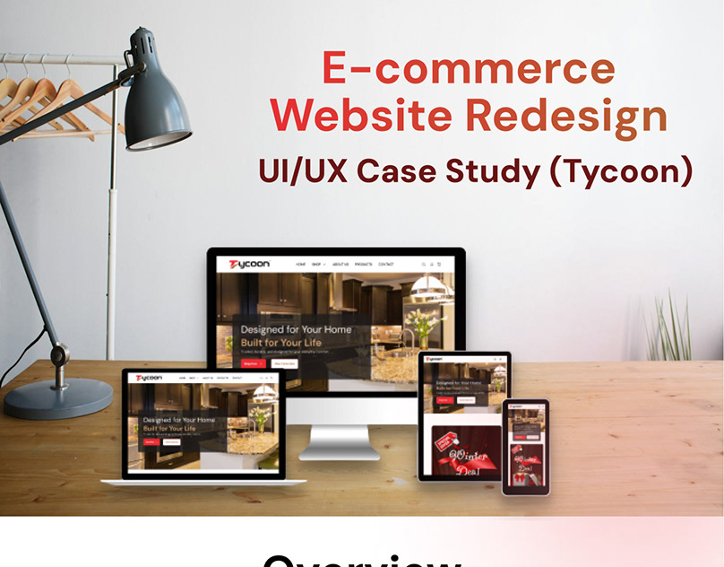
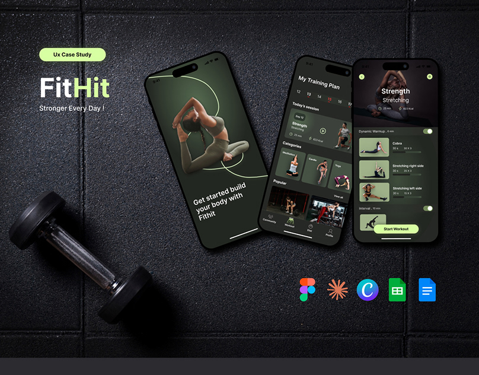
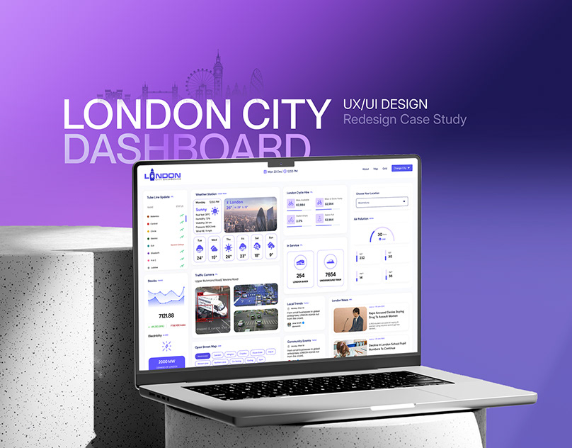

UI/UX case studies across fintech, civic services, e-commerce, and fitness. Designed for real constraints, not portfolio polish.
Redesigning access to government services in Bangladesh through a mobile-first UI/UX overhaul, built for users who don't trust digital forms by default.

A full UI/UX redesign focused on improving the digital shopping experience.

UI/UX design for a mobile fitness app, built in Figma end to end.

A responsive dashboard aggregating real-time traffic, weather, safety, and tourism data for city residents and officials.

I'm a product designer based in Bangladesh, early in my career and focused on one thing: interrogating a brief before drawing a single screen. My work on Bangladesh-specific products has meant designing for entry-level Android phones, bKash-style payment patterns, and users who need trust signals more than polish. I'm strong at catching a broken brief early and at forced-perspective critique. I'm still building experience with direct user testing and native mobile implementation.